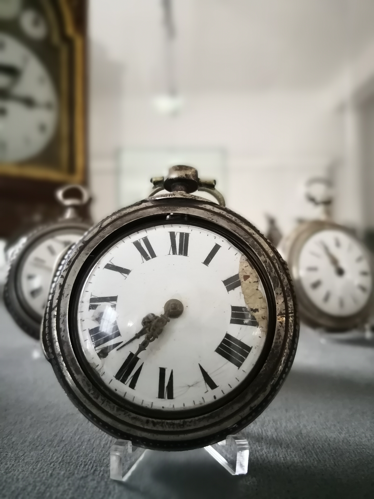

Die Krumhuber Familie
Vorchdorf hatte das Glück, eine bekannte Uhrmacherfamilie zu beherbergen. Über einen Zeitraum von 110 Jahren, von 1776 bis 1886, war diese Familie in drei Generationen in Vorchdorf tätig.
Die Familie hatte ihre Wurzeln ursprünglich in Steinerkirchen, wo der Vater Georg bereits als Uhrmacher arbeitete. Zwei seiner Söhne, Bartholomäus und Johann Michael, kamen nach Vorchdorf und begründeten hier die berühmte Uhrmacherdynastie. Ein dritter Sohn zog nach Kremsmünster und eröffnete dort ebenfalls eine Uhrmacherwerkstatt.
"Von 1790 bis 1860 waren die Krumhuber für Vorchdorf von großer wirtschaftlicher Bedeutung. Die Qualität ihrer Taschenuhren machte sie weit über die Grenzen der Gemeinde hinaus bekannt und berühmt."
